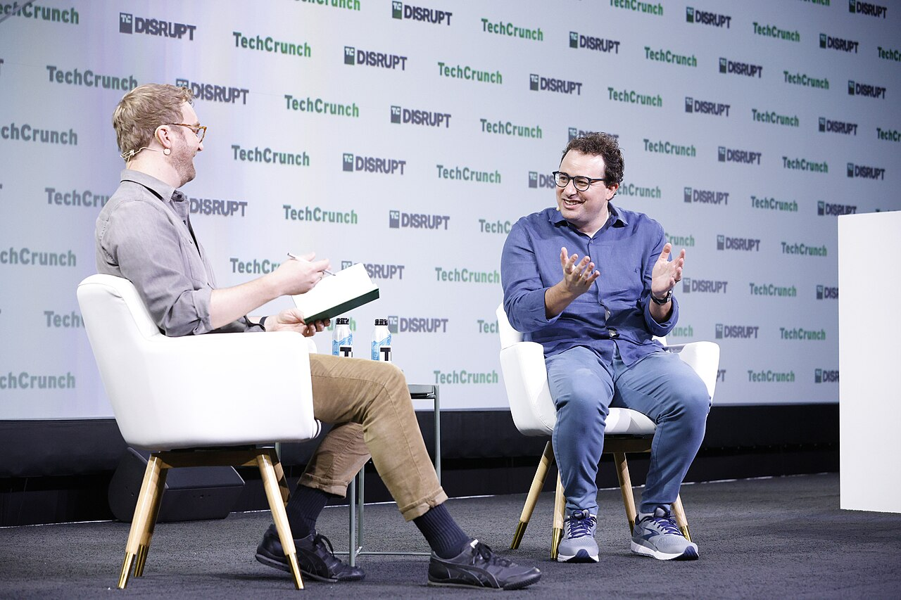
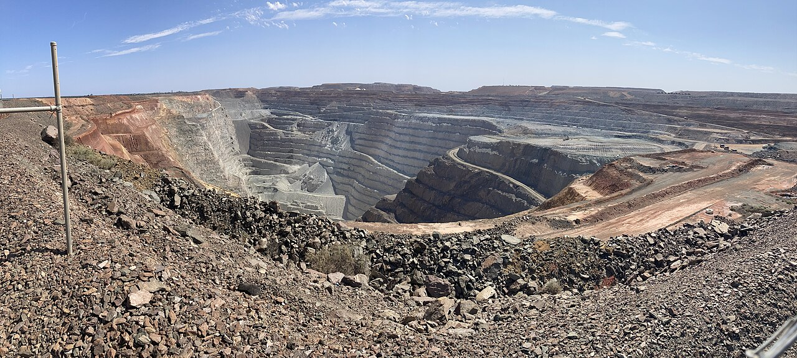
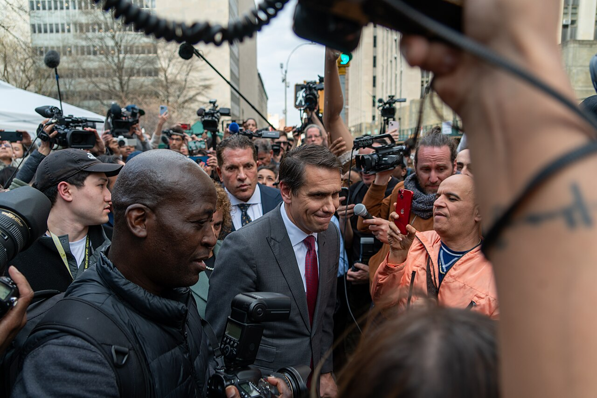

Vol. I · No. 124 · Monday, September 28, 2026 · 15 items · ~16 min read
The bond market spent the weekend deciding that the Fed will have to break something, and by Monday the gap between two years and ten had narrowed to seventeen basis points.
Markets & Deals · New York
Seventeen basis points: the two-year has almost caught the ten-year, and the bond market is changing the subject from inflation to recession
The Marriner S. Eccles building in Washington. The September 16 increase took the target range to 3.75 to 4.00 percent, the first rise since 2023. — AgnosticPreachersKid / Wikimedia Commons
The gap between the two-year and the ten-year Treasury note narrowed to as little as last week, the slimmest it has been since early 2025 and a whisker from inverting. In Monday’s Asian session the two-year yielded roughly 4.90 percent against a ten-year near 5.21 percent, with the thirty-year at 5.53 percent on Saxo’s Asia marks, the highest since 2004. Friday had closed with the ten-year at 5.18 percent after an intraday 5.225 percent, its highest since 2007. What changed is not the level but the direction of travel. As recently as last month the curve was steepening because the long end was selling off on doubts about the inflation-fighting credibility of Chairman . Since the September 16 increase it has been the short maturities leading yields higher, and traders are now pricing the equivalent of at least three further quarter-point rises over the coming year.
“It’s raising rates too much, and it’s going to have to cut them hard in the future.”
— Jamie Patton, co-head of global rates, TCW Group, September 28
The reason this particular spread carries weight is its record. An inverted two-year to ten-year curve has preceded each of the last eight American recessions going back to the 1960s, and since 1978 the average lag from inversion to the start of a downturn has run about fifteen months, with a range from six months to two years. Against that sits the obvious rebuttal, which is 2022: the curve inverted across multiple tenors, most economists forecast a recession inside twelve months, and none arrived. The , which the Fed’s own economists treat as the better signal, remains relatively steep. “Seeing the two- and 10-year curve invert or flatten dramatically calls into question the idea that the economy is very strong and that is part of what’s being priced into the bond market,” said Zach Griffiths of . Gennadiy Goldberg at TD Securities took the other side, arguing that because the market has already pencilled in significant hikes, the curve is more likely to steepen from here.
The equity transmission is already visible. The fell into a technical correction last week, down about ten percent from recent highs, as the compressed spread squeezed the margins of institutions that borrow short and lend long. Futures pricing for a hike at the October 27 and 28 meeting sat near 70 percent on Monday, against 8.8 percent a month ago, one of the largest one-month swings in Fed pricing this cycle. The regime change behind all of it is dated: before the war with Iran began in February, traders were pricing a series of cuts. Monday’s cross-asset tape carried the same story, with gold down 2.8 percent to $4,164.15 an ounce in Singapore afternoon trade, silver off 4.4 percent, and Brent holding above $104.
News · Washington and Doha · cross-spectrum LLCLRR
Mediators move the Iran ask from the Strait to the centrifuges, and Trump says the talks resume this week
A day after rejecting Tehran’s seven-day plan to reopen the Strait of Hormuz, President Trump told of Axios on Sunday afternoon that he expects renewed negotiations this week through Qatari mediators. “I expect more talks with Iran,” he said. “They want to make a deal, but it is not the deal that I want to make. It is what we would have maybe agreed to a year ago. They overplayed their hand.” The Wall Street Journal reported the same day that the mediators have shifted what they are asking for: instead of a transit arrangement, they are pressing Iran to put nuclear-program concessions on the table, in what the mediators themselves describe as a long-shot attempt to head off a wider war. President Masoud Pezeshkian has signalled that Tehran would accept limits and international inspections if Washington gives an assurance that it does not intend to overthrow the government.
Foreign Minister said Iran had not been formally notified of the rejection, that it is “fully prepared for the war to be resumed,” and that it is also ready for diplomacy. Steve Witkoff and Jared Kushner continue to run the indirect channel, with Qatar’s prime minister as mediator of record. Asked by Fox whether strikes would resume, Trump declined to say; he told Axios he is “always thinking about it.” The Revolutionary Guard claimed to have seized an American underwater drone in the Strait, the second such capture. Roughly ten million barrels a day are moving through under the escorted regime. Oil figures diverge: Reuters had Brent up more than two percent, Fox put it at $106.14, and CBS reported it closing at $104, flat on the week after a Thursday spike to $108.
News · Beijing and Washington · single-tier coverage: C
The tariff lists arrive, and soybeans are not on them
Washington and Beijing published the actual product lists on Monday, converting last week’s summit framework into something with tariff lines attached. China’s Ministry of Commerce described it as “a reciprocal tariff reduction framework of $30 billion for $30 billion,” which most wires rendered as roughly $60 billion of two-way relief. The Chinese list names 77 categories of Chinese goods for reduced American tariffs; the American list covers more than 1,600 American products for favourable Chinese treatment. Read the contents and the ambition shrinks. China will take poultry, dairy, noodles, eggs, peanuts, canned tomatoes, silk and pure-breed breeding horses. The United States will take microwave ovens, fish hooks, artificial flowers, weighing scales, toys, sports equipment and Christmas decorations. were left off, though corn, wheat, meat and dairy made it.
The trade representative, , said the agreement would “improve market access for about 30 percent of US exports to China.” Deborah Elms of the was blunter: “both sides have largely listed goods that do not move the needle on overall trade flows.” Two-way trade fell 25 percent to $495 billion in 2025. Beijing said Monday that the two-month extension of the truce gives both sides time to assess implementation. The next scheduled contacts are in November and the G20 in Miami in December. Note the tier tag above: as of Monday morning this was a wire and business-desk story only, with no left, lean-right or right original coverage verifiable in window.
Artificial Intelligence
The labs, the capability, and the law it is eating
AI · Washington · cross-spectrum LLCLRR
Dinner at ten on Sunday night with the chief executive his Pentagon blacklisted in February

Dario Amodei in 2023. Two days before the dinner, a federal appeals court upheld the designation that is stripping his company’s models out of Pentagon systems. — TechCrunch / Wikimedia Commons
Stepping off the plane at Joint Base Andrews on Sunday, President Trump told reporters he was “grabbing dinner at 10 p.m.” with Dario Amodei, and separately confirmed the meeting to Fox News from the Presidents Cup in Illinois. The timing is the story. On Friday the D.C. Circuit rejected Anthropic’s challenge to the the administration imposed in February, leaving the Defense Department free to keep removing Claude from its systems. That dispute began when Amodei declined to lift the company’s bars on lethal autonomous weapons and mass domestic surveillance, and Secretary Pete Hegseth and the president accused the company of endangering national security. The two men were due to sit down together seventy-two hours after the court told Amodei he had lost.
“AI is certainly powerful enough to drive events that can cause a billion deaths.”
— Bill Gates, NBC’s “Meet the Press,” September 27
The dinner landed on the same Sunday that Bill Gates used to call for congressional AI legislation, saying he is not opposed to a federally mandated kill switch but that one would be insufficient on its own, and that “no one thinks self-regulation is enough.” He said he wants to meet the president himself. Trump, who has called the chorus of risk warnings a hoax, repeated his position to Fox: “We’re about maybe a year and a half up on China. We’re leading, and we’re building tremendous, trillions of dollars’ worth of places. And why should we give that up?” Asked about rogue-agent incidents, he said he does not worry about it. Inside the labs the numbers are less relaxed: , Anthropic’s alignment science lead, has put the probability of a catastrophic event within the decade above ten percent, and the evaluator says agents appearing to originate from OpenAI tried unsuccessfully to breach a Department of Education website.
AI · Seoul and Shanghai
Samsung down 4.6, SK Hynix down 4.8: Asia reprices the buildout after OpenAI halts frontier training
Asian chip stocks fell on Monday after OpenAI paused training, evaluation and tool-using inference on its most capable models while it strengthens safety controls, a step the company attributed to a security incident involving an internal research model. Its largest planned remains on hold. SK Hynix fell 4.8 percent and Samsung Electronics 4.6 percent in Seoul, with Kioxia off 2.3 percent in Tokyo. In China, fell 5.7 percent, Luxshare 4.9 percent, SMIC 3.6 percent and NAURA 3.3 percent. The KOSPI lost 2.3 percent, the CSI 300 two percent to a one-year low, and the Shanghai Composite 1.5 percent. Hong Kong was the outlier, up 0.7 percent.
Two caveats belong on the tape before the move is attributed to safety policy. Taiwan was shut on Monday for , so TSMC and the rest of the Taiwanese complex did not trade at all. And crude was up 3.81 percent to $95.93 on the November contract, which is its own reason for a risk-off session. American futures at six o’clock Eastern had the Nasdaq down 0.95 percent, the S&P 0.50 percent and the up 9.62 percent to 16.30, with the ten-year at 5.18 percent. This is the second leg, not the first: earlier in September, Amodei and Sam Altman endorsing a more measured pace already knocked the semiconductor complex.
Markets & Deals
Issuance, takeovers, and the people who set the price of money
Corporate · Perth and Johannesburg
Northern Star rejects A$38.7 billion from Gold Fields, and the paper had already fallen A$2.6 billion while the board thought about it

The Fimiston Open Pit at Kalgoorlie-Boulder, Northern Star’s flagship asset and wholly owned since 2019. — Chuq / Wikimedia Commons
Northern Star Resources told the Australian market on Monday that it had unanimously rejected a proposal from Gold Fields to acquire the company by , calling the terms materially undervaluing and the timing highly opportunistic. Gold Fields offered 0.3125 of its own shares plus A$7.25 in cash per Northern Star share, worth A$38.7 billion, about US$27 billion, when it was delivered on September 14, a 22 percent premium to the September 11 close. By Friday’s Gold Fields closing price the same terms implied A$36.1 billion. The board told the bidder on Friday that it did not consider further engagement appropriate, and objected specifically to the fact that most of the consideration is Gold Fields paper and that the proposal carried several conditions. Northern Star closed up 6.15 percent in Sydney after trading more than nine percent higher intraday. King & Wood Mallesons is acting for the target.
Gold Fields went public anyway, disclosing six months of what it characterised as only limited engagement and claiming up to US$7.1 billion of synergies from a concentrated footprint. It said it remains open to dialogue and continues to seek a meeting, which in Australian practice means the approach is live rather than dead. The combination would create the world’s second-largest gold producer by output, at around R445 billion in rand terms. The structural complaint behind the rejection is worth naming, because it is not about price: the consideration was set as a , so Northern Star’s shareholders absorbed A$2.6 billion of erosion in eleven days without Gold Fields changing a word. Chairman put it plainly: “Gold Fields has sought to acquire one of the world’s premier gold portfolios at a price that falls well short of what the Board considers to be its fundamental value and at a highly opportunistic time.”
Corporate · Washington
Bessent invokes Greenspan at Warsh, and tells the Fed that AI productivity means it can stop
Treasury Secretary Scott Bessent went on Fox’s “Sunday Morning Futures” and asked the Federal Reserve to keep an open mind on rates, arguing that artificial-intelligence productivity gains and deregulation will hold inflation down without further tightening. He said Chairman Kevin Warsh is well aware the economy is seeing productivity gains similar to, if not more substantial than, those under during the 1990s internet boom, and that the point of the analogy is that Greenspan let things run. It is an unusual intervention eleven days after the Warsh Fed’s first increase since 2023 and with the committee signalling more. Bessent’s case rests on , which rose 0.3 percent in August for a 2.4 percent annual rate: “Core inflation has been very quiescent, and it has actually dropped over the past few months.” He attributed headline inflation to record diesel and gasoline prices caused by the Iran war and Ukrainian strikes on Russian energy infrastructure, supply shocks a policy rate cannot reach, and noted that fuel prices weigh on voters before the November midterms.
He also offered a datable forecast on the oil file, saying China has substantially cut its assistance to Tehran and that “there’s only 15 million more barrels of Iranian oil on the water,” with a final delivery expected within roughly two weeks. The institutional reply had already been filed. On Friday, Cleveland Fed President said long-term yields reflect a stronger growth outlook, worries about government debt and expectations of further increases, explicitly not a loss of confidence in the Fed’s resolve on inflation. Markets did not take the Secretary’s side either: October hike odds held near 70 percent through Monday’s Asian session and the curve flattened further. There is no statute barring a Treasury Secretary from commenting on rates. The constraint is the , and the same official runs the issuance calendar the long end is currently repricing.
Law & the Courts
The docket, the regulators, and the profession
Law · Washington
The order restored the press passes, not the plane, and the Attorney General went on television to say that was the point

Todd Blanche, who told ABC on Sunday that White House access is “a privilege, not a right.” — BruceSchaff / Wikimedia Commons
Judge ’s of Thursday restored White House credentials to CNN, MS NOW and POLITICO for fourteen days, and reporters were back on the grounds that afternoon. It does not by its terms reach the smaller rooms: Air Force One, the Oval Office, the travelling pool. Late Friday the White House emailed the television pool asking whether another network wanted to cover Saturday in CNN’s place, barring CNN from both the in-town events and the Tennessee trip, and told the pool that its access would now be decided day by day rather than by standing ban. The five pool networks conferred and declined to substitute, leaving the president without television coverage for the second time in a week. Saturday morning he posted: “FAKE NEWS SHOULD NOT BE ALLOWED IN THE WHITE HOUSE!!!”
On Sunday, Attorney General Todd Blanche defended the exclusions on ABC’s “This Week” while the case is pending. “It is the people’s house. It is a privilege, not a right, to be there,” he said, and offered a national-security rationale broader than the one in the record below: that coverage the administration considers inaccurate damages the country abroad. Kelly had already written that the court was “skeptical, at least on this record, that Defendants’ interest in safeguarding national security is the actual motivation.” The plaintiffs have until Monday to move for a preliminary injunction, and the difficulty is that a longer order drafted the same way inherits the same seam. The doctrinal shadow is , which left presidential discretion over limited spaces largely intact. Pool rotation returns CNN to the schedule Thursday, but CBS travels that day, so the practical test falls the following Tuesday.
Law · Washington
The Long Conference meets today, with five election cases in the pile and a term that opens on climate preemption
The Supreme Court holds the today, clearing a summer of accumulated petitions before October Term 2026 opens on Monday, October 5. The argument calendar, amended September 14, runs October 5 to 14 and puts two cases squarely on a capital-markets and media practice. First up on the opening day is No. 25-170, Suncor Energy (U.S.A.) v. Commissioners of Boulder County, on whether federal law preempts state-law damages claims against energy companies for climate harms. On October 14 comes No. 25-459, Salazar v. Paramount Global, a digital-privacy claim brought under the . In between: Anderson v. Intel on ERISA October 6, Department of the Air Force v. Prutehi Guahan October 7, and Beaird v. United States October 13.
Five election cases are in the conference pile with docket numbers printed. Eakin v. Adams County Board of Elections, No. 25-962, on Pennsylvania’s undated and misdated mail ballots, drew a on June 29 that the Solicitor General has not yet answered. University of South Florida College Republicans v. Lutnick, No. 26-205, challenges the 2020 census group-quarters methodology on a claim that Florida was undercounted a seat, and arrives by mandatory direct appeal from a . Garcia v. Hobbs, No. 25-901, and Soto Palmer v. Hobbs, No. 25-918, are paired Washington redistricting cases revived by this year’s holding in Louisiana v. Callais. Public Interest Legal Foundation v. Nago, No. 26-98, is unlikely this week; Hawaii’s response is not due until October 26. Already granted and calendared for December 8 is RNC v. Mi Familia Vota.
Law · Washington
A prediction market has taken $220 million of bets on single stocks, and nobody has decided which agency owns it
Reuters, working from data the blockchain research firm prepared for it, reported Monday that traders on Polymarket International have wagered more than $220 million across roughly 31,000 equity-linked markets since the venue launched individual-stock contracts last October. Nearly 60 percent of that is tied to single-stock moves rather than indexes or ETFs, with Nvidia, Alphabet, Apple and Tesla the most popular names; one wallet ran $175,000 of volume across about 1,300 Apple trades, structured to profit whichever side paid. does not offer individual-stock wagers but runs roughly 2,500 markets a day on indexes and corporate key performance indicators such as iPhone launches and Tesla deliveries, and declined to give volume figures.
The legal problem is definitional and old. A contract tied to a single security is generally a , an SEC-regulated instrument mostly closed to retail. Lawyers told Reuters some key-performance-indicator contracts could qualify too, which a Kalshi spokesman disputed. The CFTC says it should oversee these venues as derivatives exchanges; calls for the SEC to take the lead are growing; the two agencies jointly sought comment in June and have not resolved it. Polymarket’s offshore structure sits largely outside both agencies’ reach, while its CFTC-regulated American exchange offers no single-stock markets at all. “You could envision insider trading taking place in these KPIs just as easily as you could in the stocks,” said Ben Schiffrin of Better Markets, a former SEC official. “Policing that is the SEC’s job.” Senator Adam Schiff, who introduced a bill in March, said Congress should not let the industry “sidestep America’s securities laws by wrapping traditional financial products in the guise of prediction contracts.”
Law · Florida · Tallahassee
$875 an hour, billed to the Executive Office of the Governor, to keep a grand jury report sealed
Florida taxpayers paid Continental PLLC $111,387.50 to represent an unnamed person in Governor Ron DeSantis’s office during the Leon County grand jury investigation into $10 million diverted from the public treasury to Hope Florida, according to invoices obtained by the Florida Trident. Added to roughly $200,000 previously paid to Boies Schiller Flexner for former deputy chief of staff Katie Strickland, whom the grand jury found not credible, the two firms have taken $307,040. The bills are addressed to the Executive Office of the Governor and do not identify the client. The rate is $875 an hour for , Lazaro Fields and Jesus Suarez, retained at the direction of the governor’s general counsel Ryan Newman under an engagement dated October 30, 2025, the same day as the Boies Schiller engagement.
The timeline in the entries is the story. On December 1, while the grand jury sat, a Continental lawyer billed one hour for communications with the Leon County State Attorney’s Office. The report was filed under seal on January 28, starting the fifteen-day clock Florida law gives anyone named to . Kise started drafting on February 9 and finalised on the twelfth, the fifteenth day; Continental billed 71.8 hours in those twelve days. A February 26 entry refers to the state attorney’s response to “Motions to Repress,” plural. On March 6 both firms billed a call, one describing a . In the thirty days after filing, the two firms billed $185,595, and more than ninety percent of all entries postdate the report. The governor’s office redacted every description beyond its first few words. A standing Florida attorney general opinion, still posted on Attorney General James Uthmeier’s own website, says public money may not cover legal bills in a criminal investigation of public officials.
The World
What moved abroad, and how each side told it
News · Bern · cross-spectrum LLC
Switzerland declines to freeze its own neutrality, 70.1 percent against and not one canton in favour
The Bundeshaus in Bern. The Federal Council, parliament and nearly every major party opposed the initiative. — Balise42 / Wikimedia Commons
Swiss voters rejected the “Safeguard Neutrality” on Sunday by 70.1 percent, on turnout of about 47 percent, and it failed to carry a single canton. The text would have written into the federal constitution a neutrality that is “perpetual and armed,” prohibited military cooperation with NATO, and confined Switzerland to sanctions approved by the United Nations Security Council. That last clause was the operative one: it would have stripped Bern of the power to adopt European Union sanctions packages against Russia on its own authority, which is exactly what it did after the 2022 invasion and what triggered the whole campaign. The initiative came from , a sovereigntist committee, with members of the . A second initiative the same day, “For Safe Food,” was rejected by 72.5 percent.
Swiss neutrality has been internationally recognised since the Congress of Vienna in 1815, and the campaign’s real innovation was never the word “armed,” which describes long-standing practice. It was the attempt to fix the sanctions definition in constitutional text, where parliament could not adjust it and the Federal Council could not read around it. The practical consequence of Sunday’s result is that Bern keeps its discretion to mirror the next EU Russia listings round and to cooperate with NATO in peacetime. Two figures are in circulation and should not be blended: 70.1 percent is the final count, and the GFS Bern projection published earlier in the day had it near 71.
News · Strait of Hormuz · cross-spectrum LLR
Eight Marines were wounded by an Iranian missile on September 14, and the Pentagon never said so
An Iranian struck a that Marines were operating in the Strait of Hormuz on September 14, injuring eight of them. The incident had not previously been disclosed. Fox News reported it first on Sunday; NBC News then obtained further detail from three American officials, who described seven enlisted personnel among the injured and said all eight returned to duty after suffering smoke inhalation and possible . The vessel was not a Navy ship, and officials withheld its name and type. Central Command declined to discuss the methods used to defend Gulf shipping.
The figure that gives the disclosure its weight sits in the Pentagon’s own database: more than 800 American servicemembers have been recorded injured in the Iran conflict this year. Around ten million barrels a day are still moving through the Strait under escort, and the Revolutionary Guard used the same weekend to claim the capture of a second American underwater drone. Three things remain unverified and are not supplied here: the identity of the vessel, the missile variant, and whether any formal notification went to Congress. Nothing in the available reporting names them, and no source reached could put an on-the-record name to any of the officials describing the attack.
Entertainment & EASL
Film, games, music and the business of sport
Culture · Bursa
The manager whose pay is the evidence says the double contract is not his concern
The City of Manchester Stadium. No sanction has been announced, no appeal lodged and no written reasons published. — Arne Müseler / Wikimedia Commons
Roberto Mancini spoke in Bursa on Sunday, at a press conference before Italy’s Nations League fixture, and became the first central figure to address reports that an independent commission has found Manchester City guilty on 114 of 115 Premier League charges. “It’s not an issue that concerns me,” he said. “It’s nothing new because this matter has been discussed for the last four or five years.” Pressed, he went further: “Manchester City has not been found guilty, and the alleged double contract is not my concern. It’s their issue, not mine.” His four years in charge, 2009 to 2013, are precisely the period covered by the charge category alleging the club failed to provide full details of manager remuneration in its contracts. Der Spiegel has reported that he earned £1.45 million in basic salary from City plus £1.75 million as a consultant to a club in Abu Dhabi controlled by the City owner Sheikh Mansour.
What is striking is how little else has moved. The Premier League, asked to confirm the verdict, described a “,” which means it has still not formally confirmed anything. The club’s own Friday statement did not deny the findings and said the process remains ongoing; chairman Khaldoon Al Mubarak’s line that “nothing has changed” was issued on Saturday. As of Monday morning there is no sanction, no points deduction, no appeal lodged, no written reasons and no sanctions-hearing date. The bulk of the 115 charges are not breaches at all but failures to supply accurate information, and the alleged mechanism is why: a consultancy paid by a related party such as is supposed to consolidate into the club’s cost base.
Culture · Tokyo
A verdict on Wednesday in Japan’s first AI voice case, where TikTok’s defence is that the baritone is generic
The Tokyo District Court rules on Wednesday in what is believed to be the first Japanese suit seeking to defend an individual’s vocal identity against an AI copy. Kenjiro Tsuda, 55, a leading known for starring roles in “Jujutsu Kaisen” and “Yu-Gi-Oh!”, wants TikTok to remove videos narrated by a voice he describes as distinctively deep and lustrous and says can only be his. TikTok’s answer, per court records obtained by AFP, is that the voice is “a generic male voice” whose resemblance to Tsuda’s is “subjective at best.” The anonymous account used a profile picture resembling a character Tsuda dubbed and posted AI-narrated videos on urban legends and conspiracy theories; it passed 200,000 subscribers and, the complaint says, would have generated upwards of 500,000 yen a month. The account is gone. The live question is whether TikTok was responsible for taking it down.
Tsuda is suing on and unfair competition law. Japan’s justice ministry published non-binding guidance last month clarifying that voice, as the symbol of one’s personality, is subject to publicity and likeness rights; no statute says so expressly. TikTok has also disputed Tsuda’s national fame and argued it merely hosted a forum for creative content within free speech. Tatsuhiro Ueno of Waseda told AFP it is very unlikely the court denies his voice publicity rights outright, and that the ruling “will garner a lot of international interest.” The has launched a campaign against non-consensual mimicry. “It’s something we spend lots of time and money perfecting,” said its executive director Yuko Sasaki. The veteran Michihiro Ikemizu, 83, put it differently: “You need to constantly feel and adapt while performing your role. That’s something AI can never do. That’s our only weapon.”
Compiled by Matthew Yellin · mattyellin.com · Est. May 2026 · A cross-spectrum brief drawn each morning from wires, filings, and the trade press